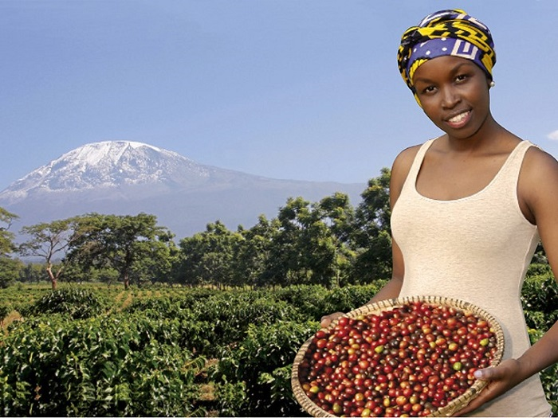
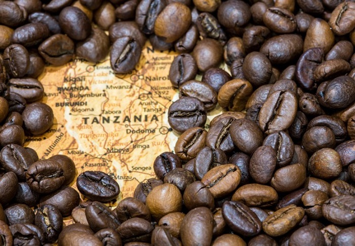

出国旅游，最担心的是什么？小爱最担心的就是吃的，所以出国前必去超市购几大包泡面，几袋榨菜，王中王火腿肠！就怕旅游地的食物难以下咽，饿着肚子可不是我们旅游的初衷，相信大家也有同样的经历。
亚洲的食物都是同宗同族，自然不用担心不合口味。如果远一点，再远一点，再远那么一点点，到了一万多公里以外的乞力马扎罗呢？在享受乞力马扎罗壮丽美景的同时也能享受到当地的美食那才算是无憾的旅行。这点大家不用担心，虽说在遥远的非洲，但菜式依然保留传统的烹制方法，在此基础上又吸纳了其他国家菜式的做法，形成了风味独特的食物结构。
而地处非洲的乞力马扎罗是一个物产及其丰富的地区，畜牧业，渔业，种植业都相当发达。所以，想吃牛羊肉的，海鲜的，甚至是绿色天然农作物的你们，可以尽情的在这里享受美味。以下几点需要大家有个心理准备哦。乞力马扎罗当地居民比较喜欢吃牛羊肉，鸵鸟肉，爱好喝咖啡。他们主要以大米，玉米，红薯为主食，口味偏重，喜欢油腻，美食大多偏辣。下面小爱来介绍两样比较有地方特色滴。
乞力马扎罗咖啡
坦桑尼亚的咖啡很早就得到了欧洲人的青睐，跻身名品行列。其中最具代表性的就是乞力马扎罗咖啡。大家会有疑问，咖啡有什么稀奇的？但乞力马扎罗咖啡有其独特之处，乞力马扎罗是一座火山，坦桑尼亚的主要咖啡区就再乞力马扎罗山脚下。由火山灰孕育出来的咖啡豆，有浓郁的大自然气息，咖啡豆中带着独特的可可果香，有较强的甘醇度，风味绝佳。正是因为其独特的大自然孕育方式，乞力马扎罗咖啡豆是坦桑尼亚咖啡豆中最顶尖的代表之一。品质比我们熟知的雀巢要好很多哦。实现在乞力马扎罗山脚下，品尝着乞力马扎罗山产的纯正咖啡，是不是很小资~~
三色鸵鸟蛋饼
我们常吃的家禽有啥？鸡鸭鹅，都是很常见的，可你尝过鸵鸟肉吗？没错，就是世界上最大且不会飞的鸟，身高可达2米多。在乞力马扎罗，鸵鸟肉鸵鸟蛋很受当地居民的欢迎，在乞力马扎罗公园也可以见到大量的鸵鸟。因此在当地有一道很有名的菜肴：三色鸵鸟蛋饼。在国内那是一定吃不到的哦，主要的原材料就是鸵鸟蛋。将鸵鸟蛋的蛋液分成三份，分别放入菠菜碎、土豆碎和金枪鱼，加适量的盐调成汁状，然后将三种蛋液分别淋入锅中煎成蛋饼，最后将三张不同颜色的蛋饼叠在一起，切成三角形（如下图）。虽然制作过程很简单，但各种食材混合在一起，口味绝佳。